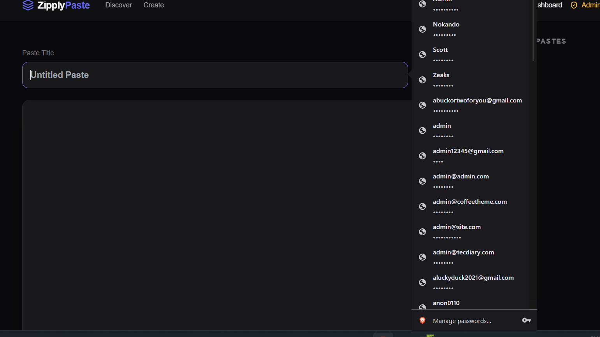
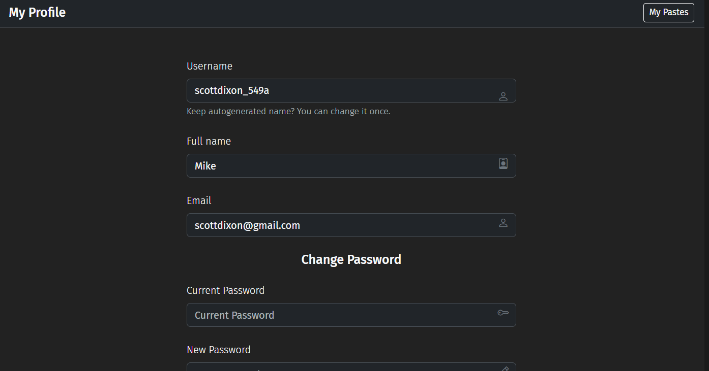

Zipply Paste is a lightweight, self-hosted, multi-user Pastebin platform designed for developers who value speed and aesthetics.

Monaco Editor with Syntax Highlighting

Polished Multi-User Profile Pages
Integrated Monaco Editor supports hundreds of languages. Features search, replace, and fullscreen mode.
Password protection, unlisted visibility, and "burn after read" options keep your snippets private.
Zero-config SQLite support. Perfect for Laragon, XAMPP, or any standard Apache hosting.
Powerful dashboard to manage users, settings, and moderate pastes with ease.
Switch between a professional dark-first aesthetic and a clean light mode instantly.
Generate personal API keys to create and manage pastes programmatically via CLI or scripts.
Join the self-hosted revolution with a lightweight, modern platform built for developers.
View on GitHub